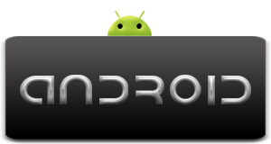

Android, al contrario que otros sistemas operativos para dispositivos móviles como iOS o Windows Phone, se desarrolla de forma abierta y se puede acceder tanto al código fuente como al listado de incidencias donde se pueden ver problemas aún no resueltos y reportar problemas nuevos.
El que se tenga acceso al código fuente no significa que se pueda tener siempre la última versión de Android en un determinado móvil, ya que el código para soportar el hardware (controladores) de cada fabricante normalmente no es público, así que faltaría un trozo básico del firmware para poder hacerlo funcionar en dicho terminal, y porque las nuevas versiones de Android suelen requerir más recursos, por lo que los modelos más antiguos quedan descartados por razones de memoria (RAM), velocidad de procesador, etc.
Android Market es una tienda de software en línea desarrollada por Google para los dispositivos Android. Es una aplicación ("app") llamado "mercado" está preinstalado en la mayoría de los dispositivos Android y permite a los usuarios buscar y descargar aplicaciones publicadas por los desarrolladores de terceros, alojado en Android Market. Los usuarios también pueden buscar y obtener información sobre aplicaciones de la página web de este.
Las tiendas por Internet están cada vez más en alza y más si se trata de tiendas de aplicaciones para los teléfonos móviles. No es de extrañar que las principales plataformas de móviles decidan crear portales donde poder descargar o comprar todas las aplicaciones posibles. Entre estas hablamos de dos de las más importantes, la App Store de Apple y la Android Market de Google pero también hay otras como Ovi Store de Nokia, App Place de Toshiba Market Place, App World de Blackberry, Microsoft Windows Phone Marketplace y Palm App Catalog. El desarrollo de aplicaciones para el iPhone no está siendo de fácil acceso como consecuencia de la política de admisión de aplicaciones de Apple que es muy restrictiva. En cambio Android Market no hace tantas excepciones con las aplicaciones, aceptando todas, propias o de desarrolladores, gracias a su herramienta Android SDK. Android Market al ser más reciente cuenta con unas 105.000 aplicaciones de las cuales el 62,2% son gratuitas. En cambio App Store contiene unas 220.000 aplicaciones de las cuales sólo el 23% son gratuitas. Por lo que se refiere al número de descargas App Store no tiene competencia , al menos por ahora, ya que es muy superior a sus competidores. En España la evolución de Android Market parece ser mejor comparada con el nivel mundial.

Esta es una aplicacion que creé para probar algunas herramientas de maquetado y estructura, ademas para testear el uso de SDK y el emulador de dispositivos android...
Mi nombre es Miguelángel Suárez Cassirám diseñador web, dearrollador freelance y entrando en el mundo del desarrollo movil con android, me da gusto compartir esta primera app contigo y espero que la info contenida sea de ayuda, espero actualizarla pronto.
Gracias...!


Android es un sistema operativo basado en GNU/Linux diseñado originalmente para dispositivos móviles, tales como teléfonos inteligentes, pero que posteriormente se expandió su desarrollo para soportar otros dispositivos tales como tablets, reproductores MP3,netbooks, PCs, televisores, lectores de e-books e incluso, se han llegado a ver en el CES, microondas y lavadoras.
Fue desarrollado inicialmente por Android Inc., una firma comprada por Google en 2005. Es el principal producto de la Open Handset Alliance, un conglomerado de fabricantes y desarrolladores de hardware, software y operadores de servicio. Las unidades vendidas de teléfonos inteligentes con Android se ubican en el primer puesto en los Estados Unidos, en el segundo y tercer trimestres de 2010, con una cuota de mercado de 43,6% en el tercer trimestre.
Los componentes principales del sistema operativo de Android (cada sección se describe en detalle):
Android está presente en una gran multitud de dispositivos, tanto teléfonos móviles, como tablets, como portátiles y próximamente en Televisiones.En la actualidad existen más de 400.000 aplicaciones para Android y se estima que unos 550.000 teléfonos móviles se activan diariamente.
Aunque los comienzos de cualquier plataforma son siempre inciertos, no ha pasado mucho tiempo para que los fabricantes se hayan dado cuenta del auténtico potencial de esta plataforma. Actualmente es el sistema con el potencial de desarrollo más importante en el mundo de la telefonía móvil. El fabricante HTC entró de la mano de Google desarrollando el primer dispositivo en aparecer en el mercado y posteriormente muchos han sido los que han apostado por el nuevo entorno, logrando una clara competencia en el sector móvil, siendo este sistema operativo accesible desde terminales de menos de 100 euros hasta terminales que superen los 600, obviando, evidentemente sus diferencias técnicas.